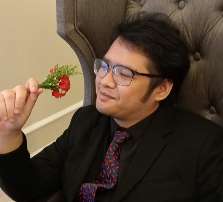
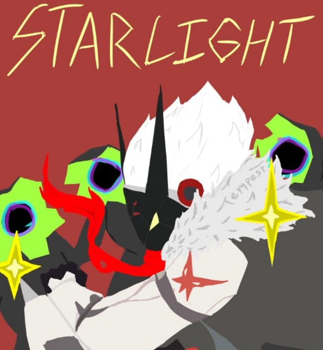

Aedrien Joseph Libunao
Born and Raised in the Philippines and Multimedia Arts Student for FEU Tech. While lacking of clear career goals for now, I plan to aim higher. Even the slightest amounts.
Toggle Dark/Light Mode
About AJL

Born and Raised in the Philippines and Multimedia Arts Student for FEU Tech. While lacking of clear career goals for now, I plan to aim higher. Even the slightest amounts.

Main hobbies are gaming and drawing but I also do other computer related hobbies from time to time. Like Photo and Video Editing, watching shows and movies, and the occasional karaoke

What I lack in sought out skills like Leadership, I make up for in being able to switch on the fly. For more direct skills, I can edit videos and photos, make character designs, animate, and can Voice act every now and then